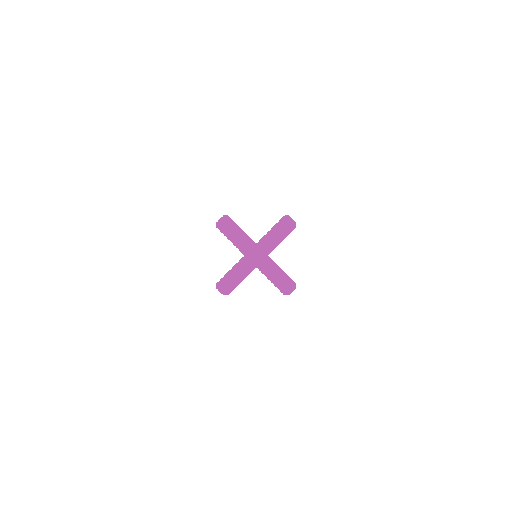

<ion-app>
  <div id="superpuesto" [syle.display]="splash ? 'flex' : 'none'" *ngIf="splash">
    
    
    <div id="splash"   src="../assets/splash.png"></div>
    <h1>Relevamiento Visual</h1>
    <h2>Franco Sagnella 4toA</h2>
  </div>

  <app-menu></app-menu> 
  <ion-router-outlet id="main"></ion-router-outlet>
</ion-app>
